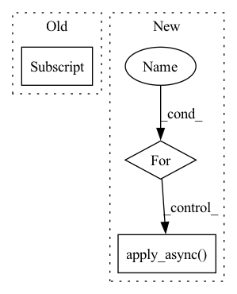

Pattern ID :34772

Before Change
image = Image.open(f"{args.inputs_dir}/{file_name}")
for pos_x in range(0, image.size[0] - args.image_size + 1, args.step):
for pos_y in range(0, image.size[1] - args.image_size + 1, args.step):
// crop box xywh
crop_image = image.crop([pos_x, pos_y, pos_x + args.image_size, pos_y + args.image_size])
// Save all images
After Change
// Splitting images with multiple threads
progress_bar = tqdm(total=len(image_file_names), unit="image", desc="Split")
workers_pool = Pool(args.num_workers)
for image_file_name in image_file_names:
workers_pool.apply_async(worker, args=(image_file_name, args), callback=lambda arg: progress_bar.update(1))
workers_pool.close()
workers_pool.join()
progress_bar.close()
In pattern: SUPERPATTERN
Frequency: 3
Non-data size: 3
Instances
Fragment ID: 99761378
Project Name: lornatang/srcnn-pytorch
Commit Name: 12911c60469281dbb13842a780d18c46ef4a0405
Time: 2022-01-12
Author: liuchangyu1111@gmail.com
File Name: scripts/prepare_dataset.py
M Class Name: AnonimousClass
N Class Name: AnonimousClass
M Method Name: main(1)
N Method Name: main(0)
M Parent Class:
N Parent Class:
M File Name: scripts/prepare_dataset.py
N File Name: scripts/prepare_dataset.py
M Start Line: 23
M End Line: 41
N Start Line: 23
N End Line: 38
'>
Before Change
def multiprocess_evaluation(pred_wavs, target_wavs, lengths):
stoi_scores = Parallel(n_jobs=30)(
delayed(stoi)(clean[0 : int(lens)], enhanced[0 : int(lens)], 16000)
for enhanced, clean, lens in zip(pred_wavs, target_wavs, lengths)
)
pesq_scores = Parallel(n_jobs=30)(
After Change
processes = []
pool = multiprocessing.Pool(processes=num_cores)
for clean, enhanced, length in zip(target_wavs, pred_wavs, lens):
processes.append(
pool.apply_async(evaluation, args=(clean, enhanced, int(length)))
)
pool.close()
'>
Fragment ID: 99761379
Project Name: speechbrain/speechbrain
Commit Name: 6df59507d812d8f0cc8000a1e1bd7d239ad5e130
Time: 2020-07-07
Author: plantinga.peter@gmail.com
File Name: recipes/Voicebank/enhance_waveform_map/experiment.py
M Class Name: AnonimousClass
N Class Name: AnonimousClass
M Method Name: multiprocess_evaluation(4)
N Method Name: multiprocess_evaluation(3)
M Parent Class:
N Parent Class:
M File Name: recipes/Voicebank/enhance_waveform_map/experiment.py
N File Name: recipes/Voicebank/enhance_waveform_map/experiment.py
M Start Line: 79
M End Line: 88
N Start Line: 55
N End Line: 73
'>
Before Change
// Use PIL to read high-resolution image
image = Image.open(f"{args.inputs_dir}/{file_name}")
for pos_x in range(0, image.size[0] - args.image_size + 1, args.step):
for pos_y in range(0, image.size[1] - args.image_size + 1, args.step):
// crop box xywh
crop_image = image.crop([pos_x, pos_y, pos_x + args.image_size, pos_y + args.image_size])
After Change
// Splitting images with multiple threads
progress_bar = tqdm(total=len(image_file_names), unit="image", desc="Split")
workers_pool = Pool(args.num_workers)
for image_file_name in image_file_names:
workers_pool.apply_async(worker, args=(image_file_name, args), callback=lambda arg: progress_bar.update(1))
workers_pool.close()
workers_pool.join()
progress_bar.close()
'>
Fragment ID: 99761376
Project Name: lornatang/espcn-pytorch
Commit Name: 402254b48af87c5b1bae284cd2be1e90b69ba396
Time: 2022-02-08
Author: liuchangyu1111@gmail.com
File Name: scripts/prepare_dataset.py
M Class Name: AnonimousClass
N Class Name: AnonimousClass
M Method Name: main(1)
N Method Name: main(0)
M Parent Class:
N Parent Class:
M File Name: scripts/prepare_dataset.py
N File Name: scripts/prepare_dataset.py
M Start Line: 23
M End Line: 41
N Start Line: 23
N End Line: 38